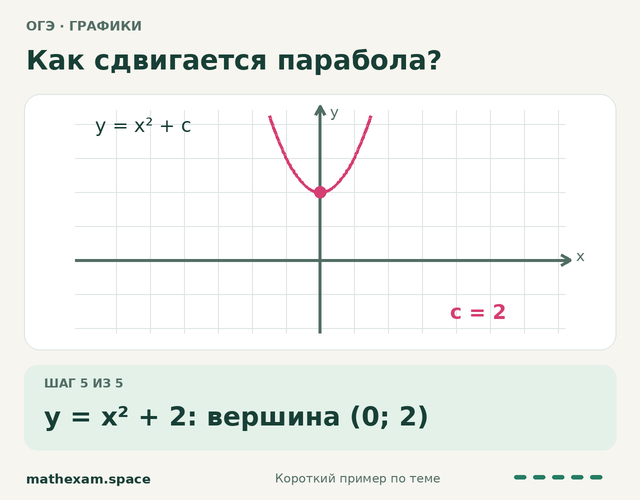
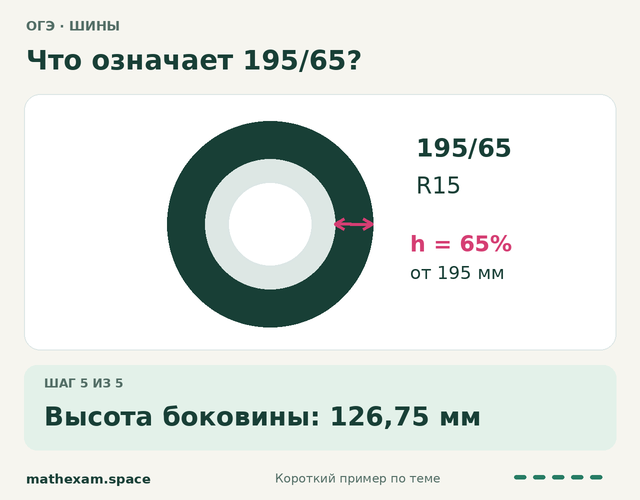
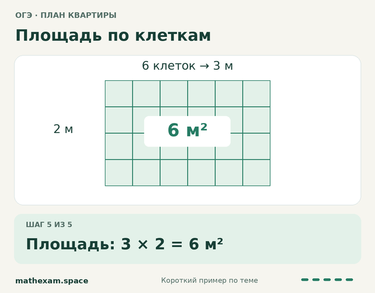
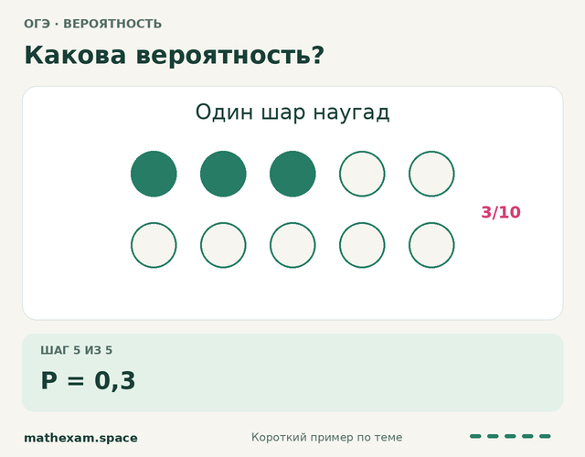
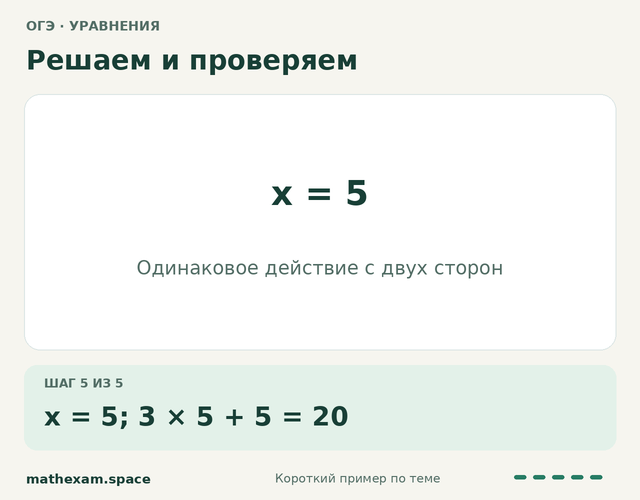
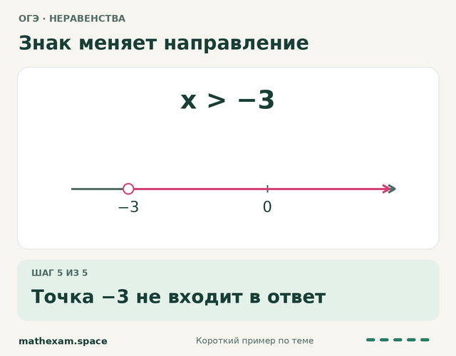

Разобраться в одной теме
Выберите номер задания. Решайте с подсказками, пока не станет понятно.
Выбрать заданиеБесплатный курс · 9 класс
Покрутить колесо. Рассмотреть квартиру. Увидеть, как улыбается парабола.
А потом — решить задачу самому.
Без регистрации · В своём темпе · С подсказками
Выберите тему и попробуйте её в деле.
Модель можно повернуть мышью или пальцем ↔
Выбери свой номер
№1–5 — практические задачи по общему сюжету. Все 8 сюжетов можно выбрать отдельно ниже.
28 маршрутов по темам ОГЭ. В каждом — шесть связанных шагов, разные модели и тренажёры, своё объяснение и короткая самостоятельная проверка.
Задания №1–5 · выбор сюжета
Один сюжет — пять связанных вопросов. Выбери, что хочешь разобрать: все восемь типов открыты сразу.
Масштаб, расстояния и выбор маршрута.
Решать этот тип →Сравнить пути и рассчитать время в дороге.
Решать этот тип →Прочитать маркировку и найти диаметр колеса.
Решать этот тип →Объём парной, выбор печи и стоимость.
Решать этот тип →План участка, площади и дорожки.
Решать этот тип →Читать план, считать площади и материалы.
Решать этот тип →Сравнить условия и рассчитать расходы.
Решать этот тип →Форматы листов, размеры и площадь.
Решать этот тип →Повторим предыдущие классы
Забыл правило или запутался в вычислениях? Выбери нужный навык: попробуй короткий пример, при необходимости открой разбор и переходи к тренировке.
Скобки, умножение и деление.
18 − 2 · (3 + 4) = ?
Сначала скобки: 3 + 4 = 7. Затем 2 · 7 = 14. Ответ: 18 − 14 = 4.
Восстановить каждый шаг деления.
156 : 12 = ?
156 : 12 = 13. Проверка: 13 · 12 = 156.
Запятая, разряды, сложение и вычитание.
2,4 + 0,35 = ?
Запишем 2,40 + 0,35. Складываем одноимённые разряды: 2,75.
Числитель, знаменатель и доля целого.
3/4 от 20 = ?
Одна четверть: 20 : 4 = 5. Три четверти: 5 · 3 = 15.
Сравнивать и складывать дроби.
1/2 + 1/3 = ?
Приведём к шестым: 3/6 + 2/6 = 5/6.
Числовая прямая и действия со знаками.
−3 + 7 = ?
От −3 идём на 7 единиц вправо по числовой прямой. Получаем 4.
Найти нужный разряд и оценить ответ.
Округли 3,47 до десятых.
Смотрим на сотые: 7 ≥ 5. Увеличиваем цифру десятых на 1. Ответ: 3,5.
Переводить единицы измерения.
1,5 часа — сколько минут?
В часе 60 минут. 1,5 · 60 = 90 минут.
Различать длину и площадь.
1 м² — сколько см²?
1 м = 100 см. Квадрат 1 м × 1 м содержит 100 · 100 = 10 000 см².
Находить часть, целое и процент.
20% от 150 = ?
20% = 20/100. Получаем 150 · 20/100 = 30.
Равенство, неизвестное и проверка.
x + 2 = 5. Чему равен x?
Вычитаем 2 из обеих частей: x = 3. Проверяем: 3 + 2 = 5.
Луч, угол и его вершина.
Где вершина угла ∠ABC?
Вершина — B, средняя буква в записи угла. Его стороны — лучи BA и BC.
У каждого своя точка старта
Выберите номер задания. Решайте с подсказками, пока не станет понятно.
Выбрать заданиеЕсли мешают дроби, вычисления или уравнения — начните с нужного навыка.
Повторить основыМатематические основы — отдельный курсНачать с деления столбикомРаспечатайте вариант. Решите самостоятельно и сверьтесь с подробным разбором.
Выбрать вариант PDFВсе разделы курса
Сложно начать с практических задач? Попробуйте диагностику №1–5.
Короткие разборы показывают приёмы из тренажёров. Нажмите «Смотреть пример», затем попробуйте сами. Числа в заданиях могут отличаться.

Огэ · графики

Огэ · шины

Огэ · план квартиры

Огэ · вероятность

Огэ · уравнения

Огэ · неравенства
5–11 классы · ОГЭ · ЕГЭ базовый и профильный
Индивидуальные онлайн-занятия с Натальей Михайловной: от школьных тем до экзаменационных задач.
Короткий разбор, понятный пример и переход к тренировке. Выберите то, что сейчас вызывает затруднение.
От выбора первой цифры частного до деления десятичных дробей.
Общий знаменатель, четыре действия и сокращение ответа.
Часть, целое и процент — три типа задач через пропорции.
Скобки, подобные слагаемые, перенос и проверка корня.
Связываем условие, чертёж и нужное свойство фигуры.
Прочитайте условие. Проследите, откуда берётся каждый шаг решения.
Решите похожее задание. Если застряли, воспользуйтесь доступной подсказкой или повторите основу.
Решите новое задание без подсказок. При ошибке найдите трудный шаг и потренируйтесь ещё.
Индивидуальные онлайн-занятия
Разберём трудные шаги, вернёмся к нужным основам и потренируемся на похожих задачах. Занятия ведёт Наталья Михайловна, автор MathExam.
Как проходят занятия → · Можно написать класс и тему, с которой нужна помощь.
Материалы для самостоятельной работы
Подписывайтесь на разборы и тренажёры там, где вам удобно.
Также группа ВКонтакте и Дзен.